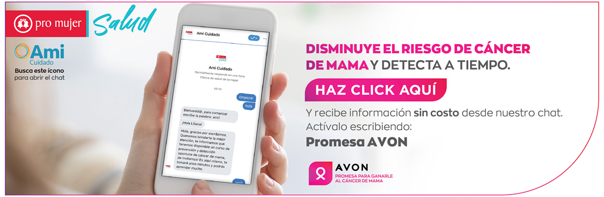

ellas!
El cáncer de mama es el más común entre las mujeres de América Latina y el segundo que provoca más muertes; aun cuando se ha demostrado que un diagnóstico en etapas tempranas y tratamiento precoz aumenta la supervivencia para las mujeres en un 90 a 99%.
Sin duda alguna, los programas de prevención tienen un importante impacto para reducir esta enfermedad, es por ello que Ami Cuidado de Pro Mujer, desarrolló un chatbot educativo con recursos donados por la Promesa Para Ganarle al Cáncer de Mama. Con este chat se busca:
Esta herramienta digital de autoaprendizaje, está disponible vía Messenger en el Facebook de Ami Cuidado @saludpromujer, o desde este link directo http://bit.ly/Inboxpmsalud desde la cual mujeres de Argentina, Bolivia, Nicaragua y México podrán acceder a él las 24 horas del día, los 7 días de la semana. Al ingresar al chat, escribe la palabra Ami1 para activarlo.
Este curso de prevención y detección oportuna de cáncer de mama, está conformado por 3 módulos consecutivos que tratan: factores de riesgo no modificables, factores protectores y pruebas de detección oportuna respectivamente. Cada módulo puede ser completado en un promedio de 10 a 15 minutos.
Aprende y difunde este servicio con todas las mujeres de tu entorno: tus familiares, amigas y clientas.
